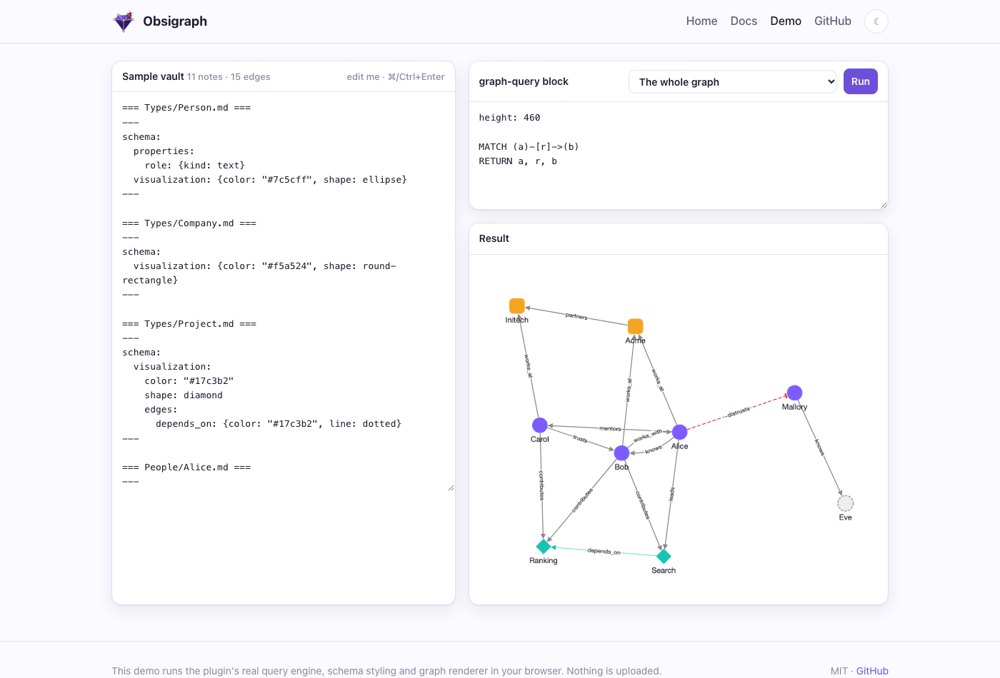
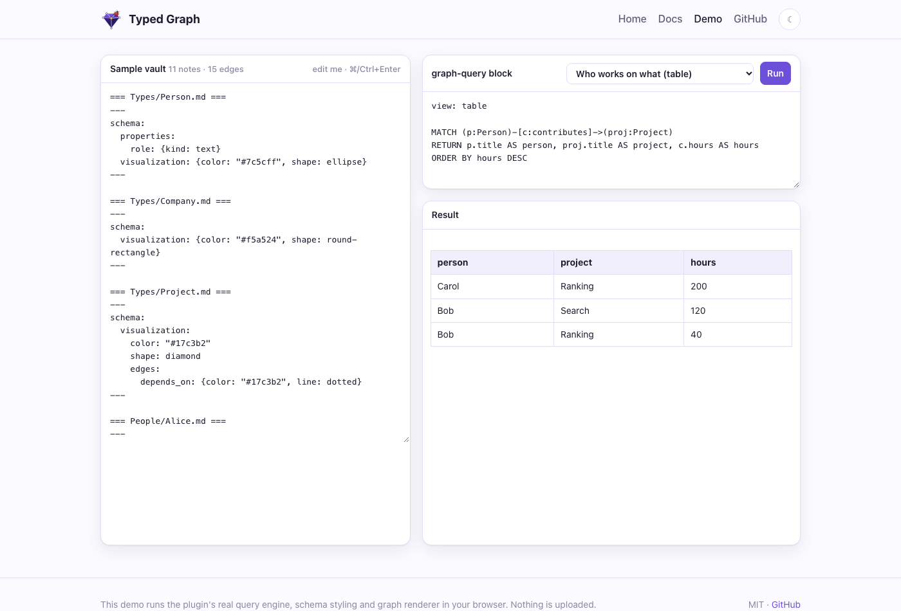
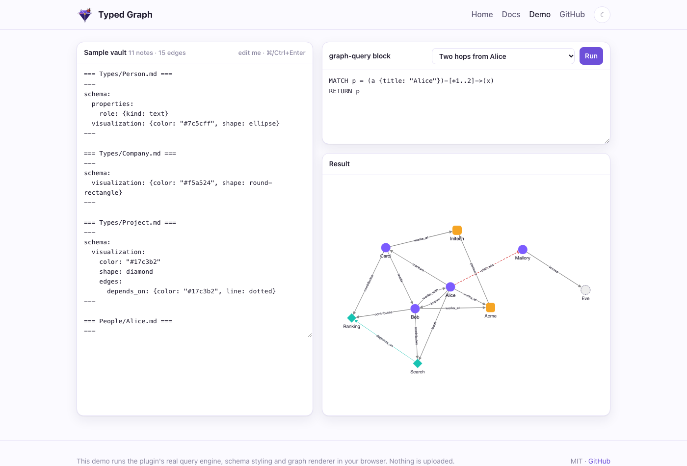
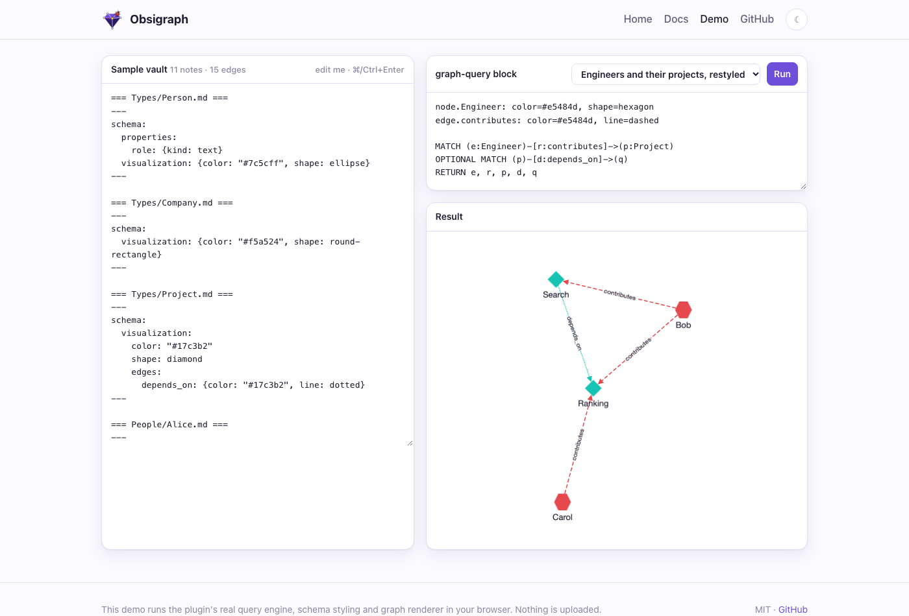

Your vault as a property graph
An Obsidian link records that two notes are related, but not how. Typed Graph lets you write what each link means, give it properties, and query the whole vault like a graph database. Everything stays in plain Markdown.
The missing half of a link
Write [[Bob]] in Alice's note and Obsidian draws a line between them. That line might mean "knows", "manages", "disagrees with" or "cites". The graph view cannot tell these apart, and neither can search. As a vault grows, the meaning of its links ends up in your head instead of in your notes.
Graph databases solved this long ago with the property graph model:
- Nodes have labels that say what kind of thing they are, and properties that hold facts about them.
- Relationships have a type, a direction and their own properties.
Typed Graph brings this model to an Obsidian vault without a database, without a new file format, and without changing a single note.
1. A typed edge is one line
You write an edge where it belongs, in the note it starts from:
knows:: [[Bob]] works_at:: [[Acme]], [[Initech]]
The word before :: is the edge type. The note containing the line is the source and the link is the target. This is the syntax the Graph Link Types plugin uses, so vaults that already use it work unchanged, and Typed Graph does not need that plugin installed. Lines in code blocks and frontmatter are ignored. A plain [[link]] in prose stays a plain link.
2. Edges can be negative
Many relationships come in opposites: trusts and distrusts, supports and contradicts, agrees and disagrees. A + or - in front of the type sets the edge's sign:
+trusts:: [[Bob]] -distrusts:: [[Mallory]]
Negative edges are drawn dashed and red with a flat arrow head. In queries the sign is r.sign, so "show me every conflict in this project" is one line of Cypher.

3. Edges have properties
Facts about a relationship belong on the relationship. Curly braces after the link hold them:
knows:: [[Bob]] {since: 2020, label: "met at NeurIPS"}
contributes:: [[Ranking]] {hours: 200}
funds:: [[Search]] {amount: 250000, currency: EUR}
Values can be numbers, booleans, quoted or bare strings, or lists. A malformed block never loses the edge: the edge is kept and the problem shows up in Show diagnostics.
Every edge has an id. By default it is derived from the source, type, target and position. For anything you reference long-term, you can pin your own:
knows:: [[Bob]] {since: 2020, id: "alice-knows-bob"}
Edge properties inside your prose
An edge embed shows an edge's property in the middle of a sentence and stays in sync with it:
Alice met Bob in {{edge: alice-knows-bob . since}}.
Bob spent {{edge: Bob -contributes-> Search . hours}} hours on search.
Embeds find an edge by pinned id or by its endpoints and type. Leave out the property to get a small table of all of them. When nothing matches, the embed shows a quiet marker, never an error. If an embed relies on an unpinned edge, diagnostics suggest pinning one, because derived ids can shift.
4. Typed nodes and schema notes
Every note is a node. Its labels come from the type field in frontmatter, and a list gives several:
--- type: [Person, Engineer] role: engineer ---
To describe a type, add a schema note: a note in Types/ named after the type. It declares properties (with kinds, defaults and required flags), which outgoing edges the type allows, how it looks, and a template for new notes:
---
schema:
properties:
role: {kind: text, required: true}
joined: date
edges: [knows, works_at, mentors]
visualization:
color: "#7c5cff"
shape: ellipse
icon: user
edges:
knows: {color: orange, line: dotted}
---
## About
Schemas are optional and advisory. A missing required property or an unexpected edge type shows up in the status bar and in Show diagnostics, but nothing is blocked. Your notes stay notes, not database rows. Create note from type uses the schema's defaults and template, and never overwrites a file.
5. Ask the vault questions
A graph-query code block runs openCypher, the query language of Neo4j and most graph databases. You draw the pattern you want with ASCII arrows:
```graph-query MATCH (p:Person)-[c:contributes]->(proj:Project) RETURN p.title AS person, proj.title AS project, c.hours AS hours ORDER BY hours DESC ```

The built-in engine runs inside Obsidian, on desktop and mobile, with no setup. It supports:
MATCHandOPTIONAL MATCHWHEREwith the usual operatorsWITHfor multi-stage queries- aggregation:
count,sum,avg,min,maxandcollect - variable-length paths such as
-[:depends_on*1..3]->, and path variables - sorting and paging
- 35 functions
Queries are read-only: CREATE, SET and DELETE are rejected, so a query can never touch a note. Errors point at the line and column.
Results are live. Edit an edge and every block that depends on it re-runs, and only the blocks you can see do the work.

6. Graphs that look like what they mean
Results render with Cytoscape.js. Nodes get colors, shapes and icons from their type. Edges show their type as a label and their sign as a line style. Links to notes that do not exist yet appear as faded stubs, which double as a to-write list.
Each style attribute resolves separately, and the most specific source wins:
- the block header, for a one-off view (
node.Person: color=red, shape=star) - the type's schema note
- plugin settings
- built-in defaults: a stable color per type, and red dashed lines for negative edges

The Graph view is a full-pane explorer built on the same renderer:
- It follows the note you are reading.
- Right-click a node to expand its neighbors in place.
- Select anything to see its properties and where each style came from.
It sits next to Obsidian's own graph view, which Typed Graph deliberately leaves alone.
7. Markdown stays the source of truth
Typed Graph only reads your vault. The graph is rebuilt from your notes in memory and updated incrementally as you type. If you uninstall the plugin, every edge is still a readable line of text. Nothing is locked in a database and nothing leaves your machine.
When you need more, an optional sidecar serves the same graph outside Obsidian:
- a LadybugDB mirror for full Cypher
- local vector search over notes and edges
- cited GraphRAG retrieval
- an MCP server for AI agents
It has its own article: Your vault as RAG storage.
Try it
- In the browser: the live demo runs the real engine over an editable sample vault.
- In Obsidian: download the demo vault. The plugin is preinstalled, and the vault has a guide and a Cypher course with live examples.
- In your own vault: Typed Graph is in the community plugin directory. Open it in Obsidian and click Install. Then add
type: Personto a note, writeknows:: [[Someone]], and add agraph-queryblock.